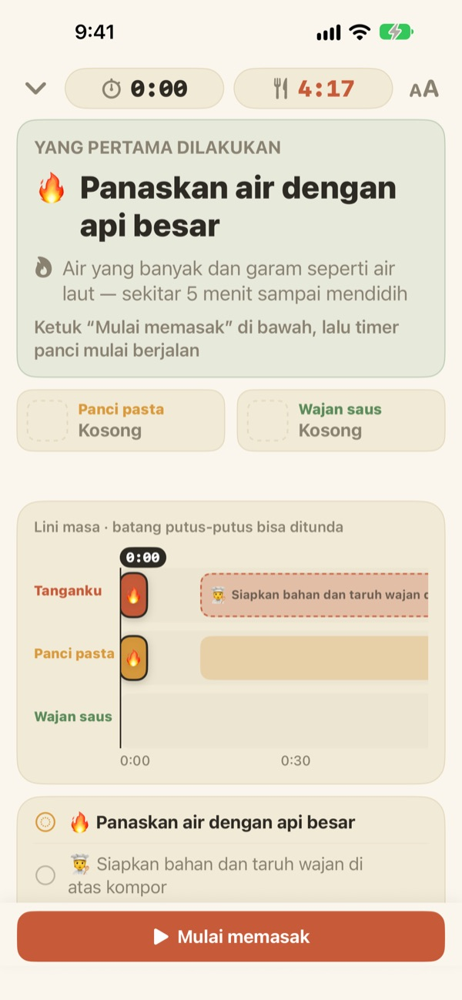
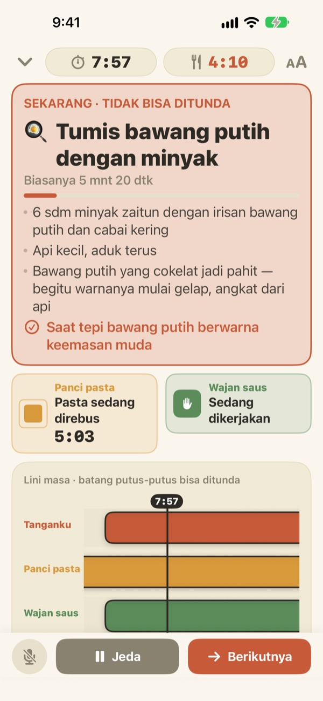
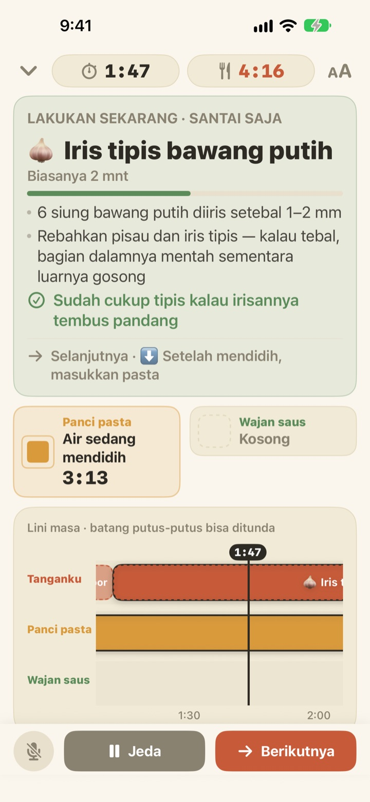
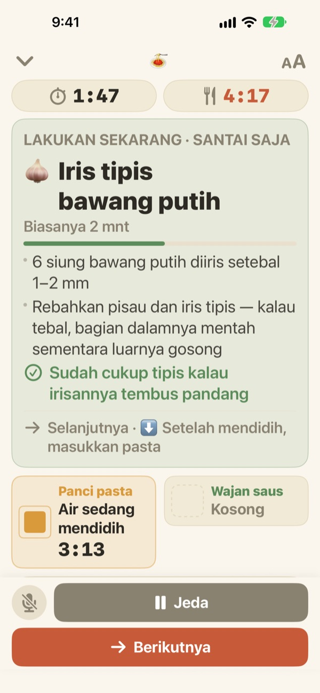

Pasta direbus,
saus ikut beres
Saat dua panci berjalan dengan tempo berbeda, Geusaie menampilkan besar-besar satu hal yang perlu dikerjakan tanganmu sekarang. Saus dijadwalkan mundur dari saat pasta diangkat.
Semua fitur gratis. Tidak perlu akun.

Coba sendiri
Masak sepiring aglio e olio dengan kecepatan 20x. Ketuk Mulai memasak, lalu ketuk Berikutnya setiap kali kamu anggap satu tugas selesai. Lihat juga bagaimana kartunya berubah saat tiba waktunya mengangkat pasta.
Sudah pasang tiga timer, tapi pastanya tetap lembek?
Satu timer untuk pasta, satu untuk saus, waktu menumis bawang putih diingat sendiri, lalu bingung mana yang duluan. Lagi mengiris, momen mengangkat pasta terlewat, dan saus baru matang dua menit kemudian. Geusaie memahami resep sebagai "ini dulu, lalu itu", jadi hanya memberi tahu satu hal yang perlu dikerjakan sekarang.
Yang tidak bisa menunggu, kartunya jadi merah
Mengangkat pasta, bawang putih yang hampir gosong: saat tiba tugas yang bisa merusak masakan kalau telat, kartu berubah warna terakota dan memintamu menunda pekerjaan talenan sebentar.
Saat satu panci selesai, notifikasi tetap datang meski kamu tidak melihat layar, lengkap dengan apa yang harus segera dikerjakan.

Mengiris hanya saat tangan senggang
Mengiris bawang putih, memarut keju, menakar: semua ini tidak terikat waktu, jadi aplikasi tidak menghitung mundur detiknya. Bilah terisi hanya saat tanganmu senggang, berhenti ketika panci memanggil, lalu lanjut dari posisi terakhir.
Terlambat menyalakan kompor tiga menit? Semua tugas berikutnya ikut bergeser tiga menit. Jadwal dihitung ulang dari waktu yang benar-benar kamu jalani.

Taruh di meja dapur, lanjut dengan suara
Ukuran teks bisa diperbesar empat tingkat agar tetap terbaca dari satu dua langkah, dan layar tidak mati selama memasak.
Tangan basah? Ucapkan berikutnya dan aplikasi pindah ke tugas berikutnya tanpa disentuh.

Mulai dalam tiga langkah
- 1
Pilih masakan
Cukup lihat kira-kira berapa lama dan berapa panci yang dibutuhkan.
- 2
Ketuk Mulai memasak
Tugas pertama ditampilkan dulu, dan jam panci mulai berjalan begitu kamu mengetuk.
- 3
Selesai? Berikutnya.
Ketuk tombolnya atau ucapkan "berikutnya", lalu tugas selanjutnya muncul.
Warna menunjukkan seberapa mendesak
- Hijau
- Pekerjaan persiapan. Santai saja.
- Mustard
- Giliran tugas di panci. Kerjakan sekarang, tapi tidak perlu buru-buru.
- Terakota
- Kalau ditunda, pasta jadi lembek atau bawang putih gosong. Kerjakan sekarang.
- Kotak panci
- Persegi yang menyusut adalah sisa waktunya. Waktu panci tidak pernah disembunyikan.
Di linimasa, bilah bergaris putus-putus adalah tugas yang boleh ditunda.
Semua fitur gratis
Gratis
- Kedua resep
- Timer untuk tiap panci dan linimasa lengkap
- Notifikasi saat panci selesai
- Ucapkan "berikutnya" untuk lanjut
- Empat ukuran teks
- Buka resep lewat Siri atau Pintasan
Dukung pengembang (opsional)
- Kalau aplikasinya membantu, kamu bisa mengirim tip kecil dari Pengaturan
- Tip tidak membuka apa pun. Tanpa tip, semua fitur tetap bisa dipakai
Tip sekali bayar, bukan langganan.
Tanpa akun, tanpa iklan, dan tetap bisa dipakai tanpa internet.
Pertanyaan umum
Sudah bilang "berikutnya" tapi tidak lanjut.
Tombol mikrofon di kiri bawah berwarna merah saat sedang mendengarkan dan abu-abu saat mati. Pertama kali, izinkan mikrofon dan pengenalan suara; kalau sempat ditolak, nyalakan lagi di app Pengaturan > Geusaie. Aplikasi mendengarkan kata yang tertulis di tombol Berikutnya. Kalau dapur sangat bising, ketuk saja tombol Berikutnya di bawah.
Panci sudah selesai tapi tidak ada notifikasi.
Periksa apakah notifikasi sudah aktif di Pengaturan > Notifikasi > Geusaie. Mode Fokus bisa membuat bunyinya tidak keluar. Notifikasi hanya datang saat panci selesai; persiapan seperti mengiris atau memarut tidak diberi notifikasi supaya kamu tidak merasa dikejar.
Kalau mulainya terlambat, jadwalnya bagaimana?
Dihitung ulang dari waktu yang benar-benar kamu jalani. Terlambat menyalakan kompor tiga menit, tugas berikutnya ikut mundur tiga menit, sementara saus tetap dijadwalkan mundur dari saat pasta diangkat.
Teksnya terlalu kecil.
Di layar memasak, ketuk tombol ukuran teks di kanan atas lalu pilih Normal, Besar, Lebih besar, atau Terbesar. Pilihanmu akan diingat.
Apakah layar mati saat memasak?
Tidak. Selama memasak layar tetap menyala, jadi kamu tidak perlu menyentuhnya dengan tangan basah.
Masakan apa saja yang ada?
Aglio e olio (sekitar 15 menit, 2 panci) dan pasta saus krim tomat (sekitar 20 menit, 2 panci), berdasarkan resep dari Serious Eats, Gimme Some Oven, RecipeTin Eats, dan The Burnt Butter Table. Masakan apa pun yang memakai dua panci sekaligus cocok, jadi beri tahu kami resep yang ingin kamu lihat.
Apakah suaraku direkam?
Tidak. Aplikasi hanya mendengarkan kata "berikutnya" dan tidak merekam atau menyimpan suara. Jika perangkat mendukung, pengenalan suara hanya diproses di perangkat. Tidak ada data pribadi yang dikumpulkan.
Bisa dibuka lewat Siri?
Bisa. Pilih masakan di Siri atau app Pintasan, dan layar memasaknya langsung terbuka. Jam baru berjalan saat kamu siap merebus air dan mengetuk Mulai memasak.
Bisa dipakai di perangkat apa saja?
iPhone dan iPad dengan iOS 17 atau lebih baru. Tidak perlu akun maupun koneksi internet.
Bagaimana cara melaporkan masalah atau mengusulkan resep?
Lewat Pengaturan > Kirim Masukan di aplikasi, atau email ke alamat di bawah. Sertakan model perangkat dan versi iOS supaya kami bisa memeriksanya lebih cepat. Biasanya kami membalas dalam beberapa hari.
Ada kendala, menemukan yang aneh, atau punya resep yang ingin ditambahkan? Kirim ke leeo@kakao.com.